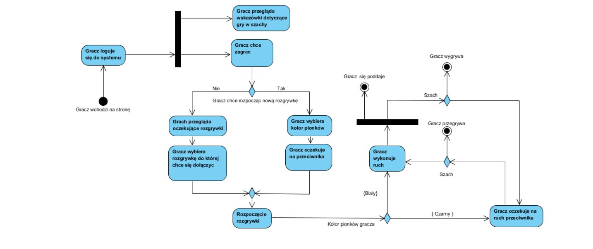
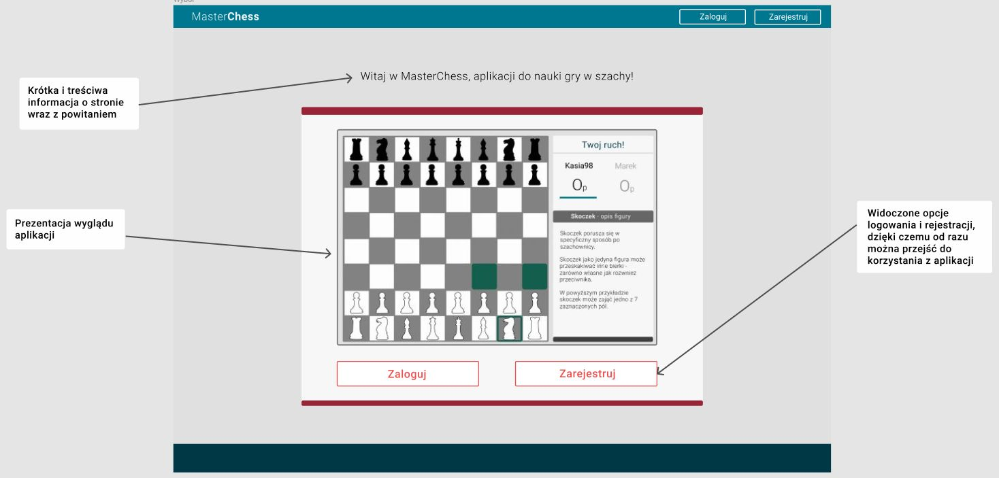
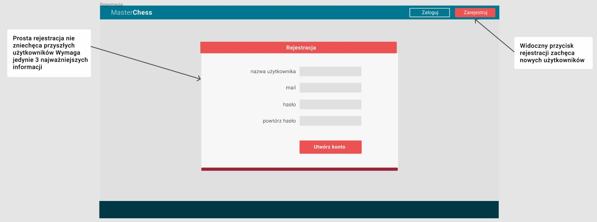
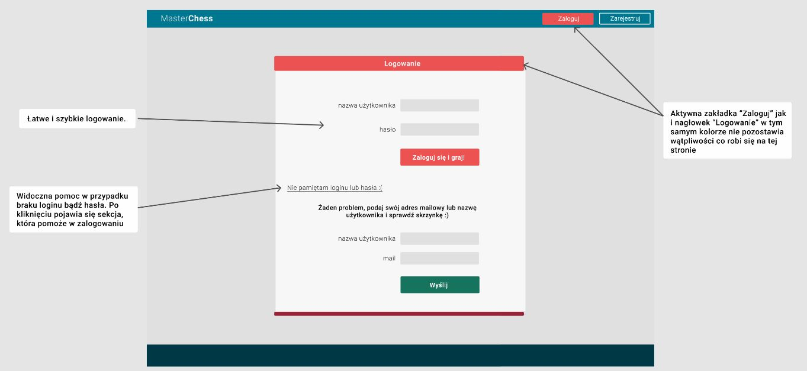
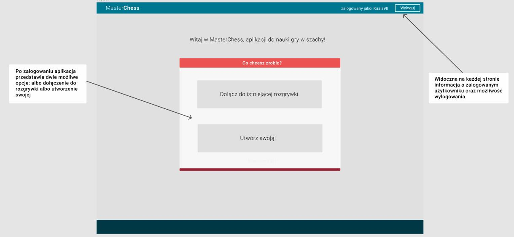
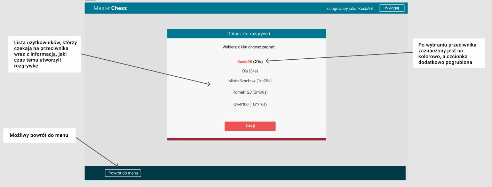
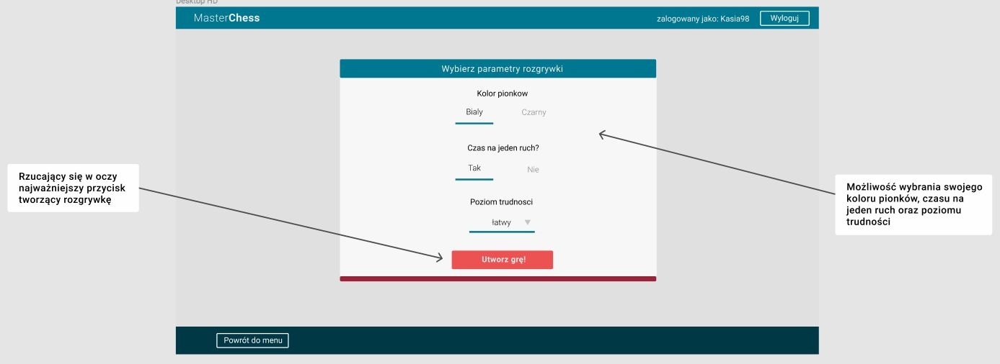
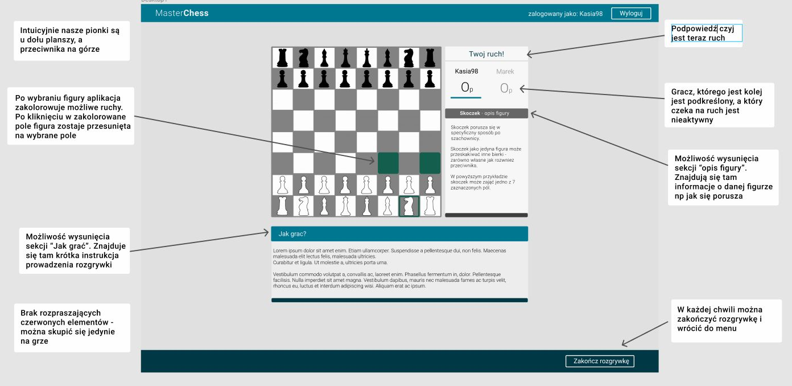
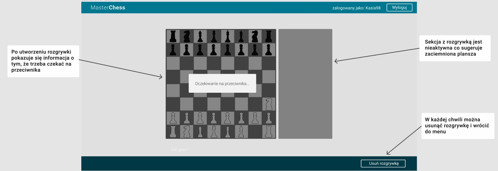

Aplikacja webowa
MasterChess
Pomysł na aplikację
- Aplikacja skierowana do osób chcących nauczyć się gry w szachy.
- Serwis, który pozwoli na rozgrywkę między dwoma graczami online.
- System podpowiadający ruchy i udzielający wskazówek podczas rozgrywki.
Specyfikacja wymagań
- Wybór koloru pionków przez osobę rozpoczynającą grę.
- Wyświetlanie opisu ruchu zaznaczonego pionka.
- Przedstawia wszystkie możliwe ruchy wybranego pionka.
- Możliwość prowadzenia i zakończenia rozgrywki.
- Wybrór poziomu trudności.
- Dynamiczne liczenie punktacji.
- Rejestracja i logowanie użytkowników.
Historyjki użytkowników - wymagania funkcjonalne
Posiadając wymagania użytkowników mogłam zdefiniować je w formie historyjek oraz diagramu przypadków użycia.
- Jako gracz chcę wybrać jakim kolorem będę grać, ponieważ może to mieć wpływ na przebieg rozgrywki.
- Jako gracz chcę poprowadzić rozgrywkę z drugim graczem, abyśmy oboje mogli się uczyć gry w szachy.
- Jako gracz chcę móc wybrać figurę, którą będę się poruszać, aby móc wybrać gdzie się ruszyć.
- Jako gracz chcę móc wybrać figurę i przeczytać jej opis, aby wiedzieć jak się porusza, ile jest warta punktów oraz inne dodatkowe informacje.
- Jako gracz chcę dostać podpowiedź o możliwych ruchach wybranej figury, aby wiedzieć gdzie można ją postawić.
- Jako gracz chcę ruszyć się daną figurą (zmienić jej pozycję).
- Jako gracz chcę móc zbić figurę przeciwnika, aby zdobywać punkty.
- Jako gracz chcę znać punktację rozgrywki.
- Jako gracz chcę wybrąc poziom trudności, aby móc nauczyć się więcej.
- Jako użytkownik chcę móc zalogować się do aplikacji, aby mieć swoje konto i móc je spersonalizować.
Realizowany proces
Wraz z programistami utworzyliśmy diagram aktywności, aby zrozumieć proces korzystania z aplikacji przez użytkownika.
Prototyp interfejsu
Biorąc pod uwagę wszystkie potrzeby użytkowników zbudowałam prototyp.
       